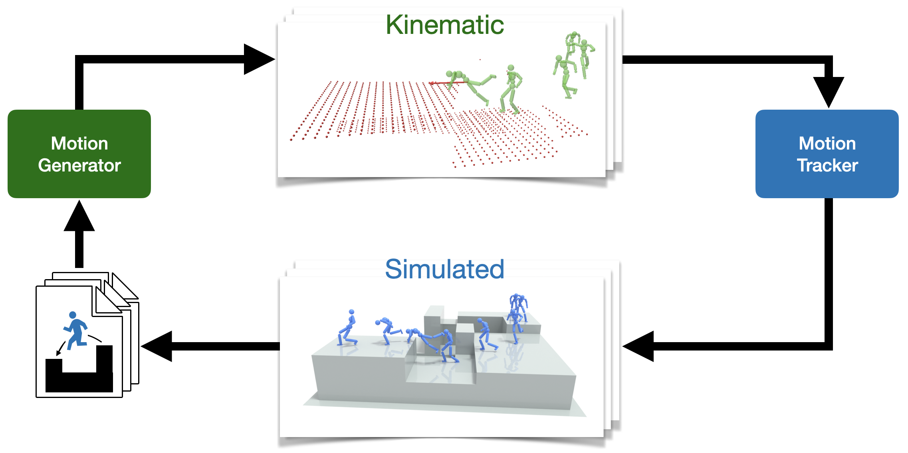
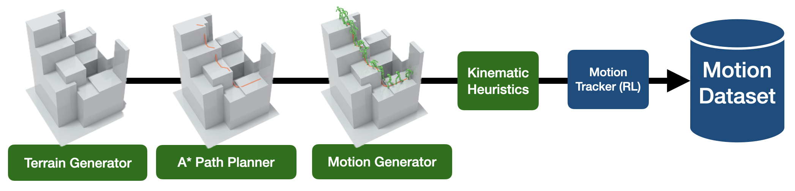

Early sketches, various experiments in between, and the final demos of my first SIGGRAPH paper.
This blog post is a small record of the research journey behind my first SIGGRAPH paper - PARC: Physics-based Augmentation with Reinforcement Learning for Character Controllers.
I'm sharing this hoping that reading about some of the challenges I encountered might be useful to others.
Motivation
My interest in simulated characters that can traverse complex terrain came from something fairly simple: sandbox games.
I've always loved environments where the player can build, modify, and explore freely.
I've also always been interested in games which incorporate physics into their game mechanics.
As physics simulators become faster and more robust, it seemed to me that eventually, game developers would want to experiment with fully physically simulated characters.
If physics-based characters were ever to become mainstream, then the control becomes a very challenging problem.
The players can only control them from a high-level with a very low DOF action space (e.g. game controller, keyboard arrow keys or WASD, mouse).
The character itself needs a low-level controller to control the high DOF action space (joint torques).
Furthermore, given my own preference for sandbox games, I want these characters to not only navigate across carefully designed levels,
but also across environments that might be user-created or procedurally generated.
Technology
A widely adopted approach for controlling the low-level action space of bipedal simulated characters is to train policies, via deep reinforcement learning, to track reference motions. This paradigm was introduced in DeepMimic and has since become highly influential in both computer graphics (e.g., ADD, PHC, MaskedMimic) and robotics. As a result, simulated characters can now perform extremely challenging and dynamic behaviors through motion tracking.
However, reference motions do not constitute a low-dimensional, intuitive control space that humans can directly specify. This motivates the need for a hierarchical framework, in which a high-level controller interprets human intent and generates appropriate reference motions that are then executed by the low-level tracking controller.
Motion Generator on Flat Ground
We decided to go with a motion diffusion model for our motion generator.
On flat ground, these models were actually pretty good. Here is a demo of the first controllable motion generator I trained:
My first diffusion model trained on running motions going in all directions, using Isaac Gym's visualizer.
Motion Generator on Terrain (First attempts)
To train a terrain-aware motion generator, we paired motion data with terrain inputs.
We used a simple 2.5D blocky heightmap representation to keep the problem tractable.
I found heuristic methods for generating the terrain to pair with the motion to be insufficient,
so I built a lightweight motion-terrain editor to manually create training examples.
With this dataset in place, we trained a terrain-conditioned motion generator (architecture details are provided in the PARC paper). Early results were weak: the model occasionally reacted to terrain, but in most cases the generated motions ignored it entirely.
April 30, 2024. Failure of the motion generator with terrain observations.
Tools for Manual Data Augmentation
Well maybe we just need more data?
Can we use some motion editing tricks to carve out more data from what we have?
Maybe we just need to blend some clips together to improve motion diversity...
A video showing a stitching technique using two original motions to create a new motion.
I am not an animator and using very naive techniques to stitch motion clips together would produce very unnatural motions.
This is when I really went into a "physics-based" motion augmentation phase, using DeepMimic controllers trained on poorly stitched kinematic motions to generate new physically correct motions.
A video showing a stitched motion, where the transition between running and jumping onto a platform is blended.
Notice that the character slides in an unrealistic way during the turn.
A video showing the previously blended motion tracked by a physically simulated character.
Notice that the character places its foot out to make a previously unrealistic motion now physically possible.
Over the course of roughly a month, during which I was visiting home and partially on vacation, I iteratively assessed the types of motions missing from our dataset. My goal was to address these gaps through manual, physics-based augmentation, with the hope that generating a modest set of additional motions would provide sufficient coverage to train a reasonably effective model.
A key limitation of our dataset was its minimal height variation across terrains. For instance, in climbing scenarios, we only included two distinct wall heights. While it would have been possible to restrict our target environments to match these limited configurations, doing so would have felt like an undesirable compromise. If the demonstration environments were not meaningfully more complex than the training data, it would be difficult to justify the contribution of the motion generator.
To overcome this, we introduced an initial data augmentation step in which we randomly varied terrain heights throughout the dataset and applied physics-based corrections to post-process the resulting motions. Additionally, we introduced small random spatial perturbations, such as slight stretching, squishing, and rotation, to further increase the diversity of motion trajectories.
Then we retrained our model, and it did get slightly better.
Motion Generator on Terrain with a bit more data
September, 2024.
September was the month our motion generator finally kind of worked.
Yes it's a little bit better...
These motions may not be that good, and their quality of their output varies a lot.
At this stage of the project, we have two options:
1. Accept our dataset as final, and refine our training pipeline, model architecture, etc. to squeeze the best performance out of this dataset, or
2. Improve the dataset (whether that be quality or quantity) to cover more motions and terrain variations.
My personal feeling was that our dataset was still lacking.
At this time, I've seen the amazing generalization that image diffusion models have, which were trained on internet-scale data.
This convinced me that we would get more meaningful gains by scaling data.
Human using Motion Generator on Terrain
This was the start of my art project, where I basically did "prompt engineering" with my barely working motion generators, to create long
motions on complex terrains far beyond the initial dataset, then using physics-based correction to give it the final polish.
"Prompt engineering" in this case is a term I'm borrowing from LLM lingo.
In this case, it's just trying different seeds, slightly changing the target direction, slightly editing the terrain observations,
changing which frame to continue the autoregressive motion generation from.
A motion I call "Castle Stairs".
It was made on a custom terrain I designed, and painstakingly generated with lots of trial and error using an MDM we trained on an early version of our dataset.
This would later be cleaned up by being tracked with a physics-based controller before being put in our PARC experiment's initial dataset.
The motion "Castle Stairs" tracked by a physics-based character. Our character couldn't learn the very first climbing part, likely due to the reference motion being too bad.
Incorporating these augmented motions back into the dataset and retraining the motion generator provided modest improvements. This suggested that the process could be repeated iteratively. It was enjoyable in some ways, and it reminded me of experimenting with early commercial image models like DALL·E 2 and Midjourney, where small prompt changes could lead to interesting new results.
However, it quickly became clear that this approach was not scalable. Manually designing augmentations is time-consuming, retraining the motion generator is expensive, and training a motion tracker for physics-based correction adds yet another significant computational burden. Over time, I also realized that I did not want to continue training new DeepMimic-style models for every newly generated motion. Instead, the goal was to rely on a single trained motion tracker capable of tracking motions on the fly.
This naturally raised a key question: how can we automate physics-based augmentation without requiring a human in the loop? It was an ambitious but risky direction, since removing manual guidance introduces many potential failure modes. Yet, given the limited scope of the project and the fact that I was the only person available to perform this manual augmentation, a human-in-the-loop workflow was simply not sustainable. What we needed was a fully automatic physics-based augmentation loop.
PARC
PARC is a funny little acronym that sounds like parkour. It stands for: Physics-based Augmentation with Reinforcement learning for Character controllers.
If I have to make a very accurate title for this method, it would be: automatic Physics-based motion data Augmentation with Reinforcement learning in simulation and generative modeling for planning for Character controllers.
We therefore experimented with a fully automatic PARC loop, which required building a complete data generation pipeline from the ground up. This pipeline needed several key components: a random terrain generator, a path generator to provide a coarse trajectory for the motion model to follow, and a robust motion synthesis process.
Because our motion generator, trained on the initial dataset, was still relatively unreliable, we had to employ a wide range of practical techniques to increase the likelihood of producing motions that were at least plausible enough for a DeepMimic-style controller to track. At the scale we ultimately aimed for, on the order of thousands of new motions, it was also computationally infeasible to train a separate DeepMimic controller for every generated sequence. Instead, we needed a more efficient training setup capable of producing a single controller that could generalize across the entire motion set and serve as the backbone of our offline physics-based correction process.
Every design choice in this pipeline had significant downstream consequences. If we discovered that a critical component was missing or poorly specified after starting the PARC process, we often had no choice but to restart the loop from the original dataset and run the full pipeline again. In practice, I had to do this multiple times.
There are many subtle details in this system that I could discuss at length.
Although I did not have time to fully ablate every design decision, the final pipeline proved effective enough to meet the SIGGRAPH deadline.
For readers interested in a deeper dive, I encourage you to consult the paper, my more detailed master's thesis, and the accompanying codebase.

A diagram of the "PARC" data augmentation loop.

A diagram of the data generation pipeline for a PARC loop.
PARC Self-generated Motion Data
By the end of our PARC experiments, we had substantially expanded the dataset, with coverage spanning a wide range of terrain variations.
Below are several representative examples of motions generated automatically through PARC, including both good and bad results.
One of the coolest types of motions is this jump-climb. Our initial dataset has jumping, and it has climbing, but not jumping into climbing. (dec2024_teaser_1531_0_opt_dm)
A character going through a narrow passage. (teaser_2358_0_opt_dm)
Our simulated character doesn't feel pain, so it freely knocks its head on walls. (boxes_1013_0_opt_flipped_dm)
Some motions can be straight up nonsensical. (boxes_332_1_opt_flipped_dm)
(teaser_2787_0_opt_flipped_dm)
(teaser_3139_1_opt_flipped_dm)
As you can see, our PARC loop left unchecked will produce some "bad" motions.
These bad motions get added back into the dataset, making it more likely for our motion generator to produce more bad motions.
I believe having either a human or an AI that could filter unwanted motions would greatly improve the PARC loop.
Nonetheless, the motion generator trained on all our good and bad motions can be used to generate long open-loop kinematic motions, which the motion tracker can track to give us long physics-based motions on complex terrain.
Please check out our SIGGRAPH video for our more impressive results!
As the motion tracker is not trained to track these very long motions, it will often fall down when trying to make an ambitious jump or climb.
There's many things that could be done to improve the motion tracker, but that's out of the scope of PARC.
Our motion generator and motion tracker are trained on the same dataset of short motions that the PARC loop generates.
Using the motion generator to make longer motions can give our motion tracker a challenge.
In a final experiment, we trained a motion generator from scratch on the final dataset, with reduced diffusion steps and model size, enabling real-time generation on an RTX 4090.